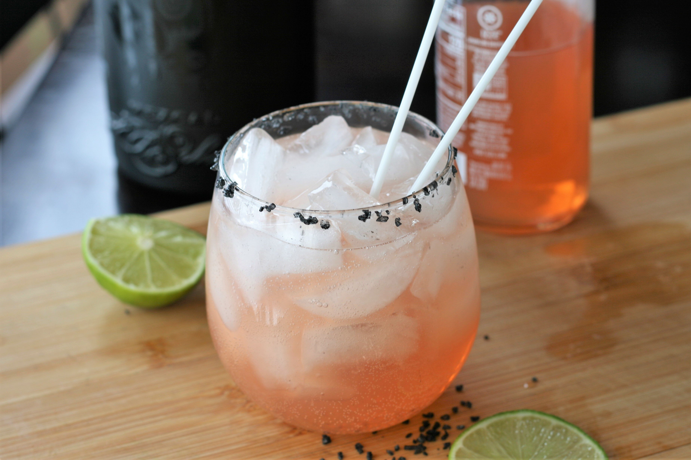

Mezcal Paloma

Description
A paloma is traditionally made with tequila, grapefruit juice, and lime, but this version uses mezcal instead of tequila for a nice smoky twist! The smoke flavor is due to the underground ovens filled with volcanic rock, coal and wood that are used to cook the agave to produce the mezcal. I like to rim the glass with coarse smoked salt or black salt, but feel free to use regular kosher salt.
Ingredients
- 2 wedges fresh lime
- 1 teaspoon kosher salt, or as needed
- 1 cup ice cubes
- 2 ounces mezcal
- 3 ounces grapefruit soda
Directions
- Rub the cut side of a lime wedge around the edge of the glass. Garnish with remaining lime wedge.
- Place salt on a plate and invert glass into salt to rim the glass.
- Fill glass with ice.
- Squeeze juice from the same lime wedge into the glass.
- Pour mezcal over ice, then top with grapefruit soda.